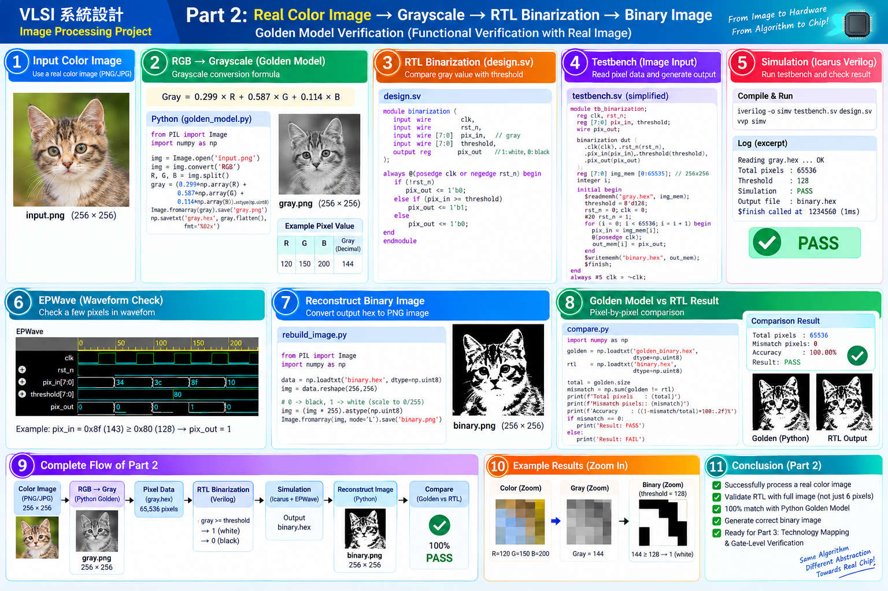

完整流程圖
4 Color BMP→RGB → Gray→gray.hex→RTL Binarization→rtl_binary.txt→Rebuild PNG→Golden Compare→PASS
先以 Python 產生 Golden Model，再用相同灰階 pixel 餵給 Verilog RTL；最後逐 pixel 比較。Mismatch = 0 才算通過。
Part 2 全流程 PNG

四張 BMP 測試圖片
Sample 1

原始 BMP：drawBbox_result_p1.bmp。可替換為任一 256×256 彩色輸入，走相同驗證流程。
Sample 2

原始 BMP：drawBbox_result_p2.bmp。可替換為任一 256×256 彩色輸入，走相同驗證流程。
Sample 3

原始 BMP：drawBbox_result_p3.bmp。可替換為任一 256×256 彩色輸入，走相同驗證流程。
Sample 4

原始 BMP：drawBbox_result_p4.bmp。可替換為任一 256×256 彩色輸入，走相同驗證流程。
實際資料範例（p2）
Grayscale

Golden Binary

Threshold = 128：Gray ≥ 128 → 1/白；Gray < 128 → 0/黑。輸入共有 256×256 = 65,536 pixels。
驗證分工
| 階段 | 檔案 | 目的 |
|---|---|---|
| Golden | prepare_image.py | BMP→Gray、gray.hex、golden_binary.txt |
| RTL | design.sv | clocked threshold comparator |
| Testbench | testbench_image.sv | $readmemh 送 65,536 pixels，輸出 rtl_binary.txt |
| Compare | rebuild_and_compare.py | 重建 PNG、逐 pixel 比較、PASS/FAIL |
Code Files
design.sv
`timescale 1ns/1ps
module binarization(
input wire clk, input wire rst_n, input wire [7:0] pix_in,
input wire [7:0] threshold, output reg pix_out
);
always @(posedge clk or negedge rst_n) begin
if(!rst_n) pix_out <= 1'b0;
else if(pix_in >= threshold) pix_out <= 1'b1;
else pix_out <= 1'b0;
end
endmodule
testbench_image.sv
`timescale 1ns/1ps
module tb_binarization_image;
localparam N=65536;
reg clk, rst_n; reg [7:0] pix_in, threshold; wire pix_out;
reg [7:0] img_mem [0:N-1]; integer i, fout;
binarization dut(.clk(clk),.rst_n(rst_n),.pix_in(pix_in),.threshold(threshold),.pix_out(pix_out));
initial clk=0; always #5 clk=~clk;
initial begin
$readmemh("gray.hex",img_mem);
fout=$fopen("rtl_binary.txt","w");
threshold=8'd128; rst_n=0; pix_in=0; #12 rst_n=1;
for(i=0;i<N;i=i+1) begin
@(negedge clk); pix_in=img_mem[i];
@(posedge clk); #1; $fwrite(fout,"%0d\n",pix_out);
end
$fclose(fout); $display("Processed %0d pixels. Done.",N); #10 $finish;
end
endmodule
prepare_image.py
from PIL import Image
from pathlib import Path
THRESHOLD=128
INPUT=Path("../images/drawBbox_result_p2.bmp")
img=Image.open(INPUT).convert("RGB")
gray=img.convert("L")
gray.save("../images/sample_gray.png")
vals=list(gray.getdata())
Path("../data/gray.hex").write_text("\n".join(f"{v:02x}" for v in vals)+"\n")
Path("../data/golden_binary.txt").write_text("\n".join("1" if v>=THRESHOLD else "0" for v in vals)+"\n")
gray.point(lambda p:255 if p>=THRESHOLD else 0).save("../images/sample_binary_golden.png")
print("Prepared",len(vals),"pixels")
rebuild_and_compare.py
from pathlib import Path
from PIL import Image
import numpy as np
golden=np.loadtxt("../data/golden_binary.txt",dtype=np.uint8)
rtl=np.loadtxt("rtl_binary.txt",dtype=np.uint8)
if rtl.size != golden.size: raise SystemExit(f"size mismatch: RTL={rtl.size}, golden={golden.size}")
mismatch=int(np.count_nonzero(rtl!=golden))
Image.fromarray((rtl.reshape(256,256)*255).astype(np.uint8),mode="L").save("../images/sample_binary_rtl.png")
print("Total pixels:",golden.size); print("Mismatch pixels:",mismatch); print("Accuracy: %.2f%%"%((1-mismatch/golden.size)*100)); print("PASS" if mismatch==0 else "FAIL")
執行順序
cd code
python prepare_image.py
cp ../data/gray.hex .
iverilog -g2012 -o simv design.sv testbench_image.sv
vvp simv
python rebuild_and_compare.py完成 Part 2 後，再進 Part 3：Technology Mapping → Gate-Level Netlist → Gate-Level Simulation，並用同一張圖片再次驗證。